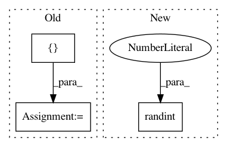

38b091ba7664f090b0df9973e6c57c7a130b3ad0,tests/test_classifier.py,,test_fit_predict,#Any#,46
Before Change
clean_dir(path)
clf = ImageClassifier(path=path, verbose=False)
train_x = np.array([[[1], [2]], [[3], [4]]])
train_y = np.array(["a", "b"])
clf.fit(train_x, train_y)
results = clf.predict(train_x)
assert all(map(lambda result: result in np.array(["a", "b"]), results))
clean_dir(path)
After Change
clean_dir(path)
clf = ImageClassifier(path=path, verbose=False)
train_x = np.random.rand(100, 25, 25, 1)
train_y = np.random.randint(0, 5, 100)
clf.fit(train_x, train_y)
results = clf.predict(train_x)
assert all(map(lambda result: result in train_y, results))
clean_dir(path)
In pattern: SUPERPATTERN
Frequency: 3
Non-data size: 3
Instances
Project Name: keras-team/autokeras
Commit Name: 38b091ba7664f090b0df9973e6c57c7a130b3ad0
Time: 2018-04-09
Author: jin@tamu.edu
File Name: tests/test_classifier.py
Class Name:
Method Name: test_fit_predict
Project Name: ray-project/ray
Commit Name: 088f8ebb69e21c7759af44c6d207a266f4a5d175
Time: 2020-09-07
Author: krfricke@users.noreply.github.com
File Name: python/ray/tune/examples/zoopt_example.py
Class Name:
Method Name:
Project Name: keras-team/keras
Commit Name: 1c221934aaeab20ed5b6fa245b33b00a8b557533
Time: 2018-11-29
Author: andhus@kth.se
File Name: tests/keras/backend/backend_test.py
Class Name: TestBackend
Method Name: test_rnn_no_states